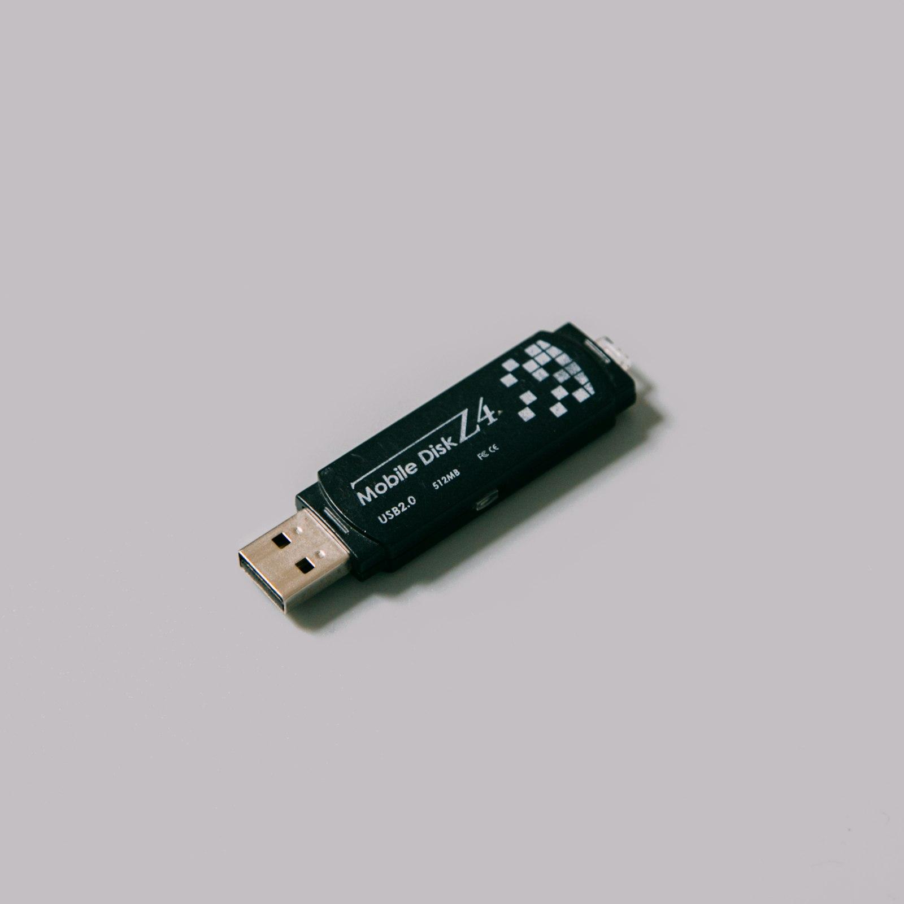

Claude Code 입문 워크숍
CLAUDE 개론
CLAUDE 관리는 뭐다?
yongamoulous
도입 · 2
CLAUDE는 뭐다?
USB다.

도입 · 3
그리고 그 안은…
📁새 폴더
📁새 폴더 (3)
📄졸업논문_최종
📄발표자료
🖼️사진백업
📁다운로드
📊통계_레포트
📁임시
📄이력서_최종
📄자기소개서
📁강의노트
📄발표자료_수정
🖼️스크린샷 (12)
📁새 폴더 (7)
📄무제.txt
📁내문서_복사본
📁동아리
📄졸업논문_v2
📁학기별백업
📊가계부
졸업논문_최종.docx
졸업논문_최종_수정.docx
졸업논문_최종_진짜최종.docx
졸업논문_최종_v2_교수님피드백.docx
졸업논문_최종_v2_제출용.docx
이게 왜 생기는지 다들 압니다. 폴더가 없어서가 아니라, 작업의 경계가 머릿속에만 있어서입니다.
도입 · 4
두 가지 USB가 있었습니다
모든 게 한 폴더에
📁 USB
📄 발표자료.pptx
📄 발표자료_수정.pptx
📄 경영학_과제.hwp
📄 통계_레포트_최종.docx
📄 동아리_사진_001.jpg
📄 시험정리.docx
📄 새 폴더 (3)
📄 ...
과목·과제별로 나뉘어
📁 USB
📁 2024-1학기
📁 경영학
📄 과제1.hwp
📄 시험정리.docx
📁 통계학
📄 레포트.docx
📁 동아리
📁 사진
📁 졸업논문
잘 정리한 사람의 USB는 과업 단위로 끊겨 있었습니다.
도입 · 5
오늘의 핵심 — 단 두 줄
① 과업 단위로 구조화
= 과목별 폴더로 끊었던 것처럼
② 과업에 대한 상세 설명을 적어둔다
= 인수인계 문서 쓰듯이
학교에서 잘했던 ①번에, 회사에서 익숙한 ②번을 더하면 끝납니다.
도입 · 6
회사로 확장하면?
📋 전사 업무에 대한 규칙 — 어디서나 적용 (global 격)
├─ TF 업무에 대한 규칙
├─ 부서 업무에 대한 규칙
└─ 외부 미팅에 대한 규칙 — 그 일에만 적용 (project 격)
CLAUDE는 이 위계를 위에서 아래로 차례로 보고
그 규칙대로 일합니다. 다음 파트(1)에서 직접 만들어 봅니다.
PART 1
환경 잡기
"Claude가 내 일을 안다"는 상태 만들기
PART 1 · 1-1
Claude Code란?
내 컴퓨터에서 일하는 Claude입니다.
claude.ai (웹 채팅)
vs
Claude Code (CLI)
대화창 안에서 답
vs
내 폴더·파일·터미널 직접 다룸
매번 복사·붙여넣기
vs
파일·외부 도구를 알아서 봄
같은 모델, 다른 자리. 오늘은 "내 폴더 안에 앉히는" 쪽을 다룹니다.
PART 1 · 1-2
ChatGPT와 다른 점, 4가지만
1
긴 글·문서에 강함
수십 페이지 PDF·계약서·보고서도 한 번에 다룸
2
톤·말투 일관성
"내가 쓰는 듯한" 답을 더 잘 잡음
3
Projects
같은 맥락 반복 작업에 폴더처럼 작동
4
파일·터미널 직접 조작
Claude Code 한정. 오늘의 주제.
이 4가지가 Claude를 선택하는 이유. 나머지는 거의 같습니다.
PART 1 · 1-3
설치 — 3단계
- Node.js 설치 (
nodejs.org에서 LTS 버전)
- 터미널에서 한 줄:
npm install -g @anthropic-ai/claude-code
- 터미널에서
claude 입력 → 안내 따라 로그인
설치 직후 터미널은 한 번 닫고 다시 여세요. PATH 갱신 안 되면 claude를 못 찾습니다.
핸즈온 1 · 1-4
본인 폴더 만들고 첫 실행
- 본인 작업용 폴더 만들기 — 예:
C:\Users\본인\my-work
- 터미널에서 그 폴더로 이동:
cd C:\Users\본인\my-work
claude 입력 → Claude가 그 폴더 안에서 깨어남- 첫 한마디: "안녕, 나는 여기서 일할 거야"
이게 USB 꽂은 순간입니다.
이제 그 폴더가 오늘의 작업 공간입니다.
PART 1 · 1-5
CLAUDE.md = 그 폴더의 메모
"이 폴더는 뭐고, 누가 쓰고, 어떤 규칙으로 일하는지"를 적은 한 장짜리 메모입니다.
# 내 사업 메모
나는 동네 카페를 운영하는 OO입니다.
손님 응대 톤은 "격식 중간 + 친근함" 정도로 잡습니다.
재고 정리는 매주 월요일 오전에 합니다.
숫자가 들어간 답은 단위(원, 잔, kg)를 꼭 붙여주세요.
Claude는 이 폴더에 들어올 때마다 이 메모를 자동으로 한 번 읽고 시작합니다.
매번 처음부터 설명할 필요가 없어집니다.
PART 1 · 1-6
두 종류의 메모 — 나의 규칙 ↔ 이 과제의 규칙
나의 규칙 (global)
~/.claude/CLAUDE.md
- "나"라는 사람의 공통 규칙
- 어떤 과제·폴더에서도 적용
- 예: "한국어로 답해", "단위는 미터법"
이 과제의 규칙 (project)
그 폴더의 CLAUDE.md
- 이 과제(폴더)에만 적용
- 나의 규칙을 덮어쓰기 가능
- 예: "이 폴더는 영문 보고서. 영어로 답해"
평소 나의 규칙이 기본, 이 과제에서만 다르게 일하는 건 과제 규칙이 덮습니다.
핸즈온 2 · 1-7
본인 CLAUDE.md 한 줄 작성
- 핸즈온 1에서 만든 폴더 안에
CLAUDE.md 파일 만들기
- 한 줄로 시작 — 길게 쓰지 마세요. 한 줄 후에 늘리면 됩니다.
나는 [업종/직무]이고 주로 [어떤 일]을 합니다.
답은 한국어로, [격식/친근] 톤으로 부탁합니다.
- 저장 → claude 재시작 → 같은 질문 다시 던져보기
메모가 있을 때와 없을 때의 첫 응답 차이를 직접 느껴보세요.
PART 2
작업 의뢰하기
"자료를 함께 던진다"
PART 2 · 2-1
텍스트로 다 적어주는 시대는 끝났습니다
ChatGPT에서 자료 참고시키려면
- 일일이 복사 → 붙여넣기
- 첨부 버튼 → 한 번에 1-2개
- 긴 문서는 잘라서 여러 번
- URL은 못 읽는 경우 많음
- 폴더 통째로는 불가
Claude Code에서
- "이 파일 봐줘" 한 줄로 끝
- 폴더 통째로 OK
- URL 그냥 적으면 가져옴
- 이미지·스크린샷 드래그 OK
- 경로 정확히 몰라도 찾아냄
오늘 Part 2의 핵심: "자료를 직접 보여주는 4가지 방법".
PART 2 · 2-2
📎 파일 — "이 파일 참고해서"
나의 의뢰
지난 분기 보고서(quarterly-Q1.docx)
톤과 구조 그대로,
이번 분기 보고서 초안 작성해줘.
Claude
→ 폴더에서 quarterly-Q1.docx 자동으로 찾아 읽음 →
"지난 분기와 동일한 4섹션 구조(요약·실적·이슈·계획)로 작성하겠습니다. 인사말·자료 인용 방식·용어 톤을 모두 맞췄습니다…"
— 파일의 톤·구조·용어가 그대로 매칭됨
팁: 정확한 경로 몰라도 OK. 파일명만 적어도 폴더에서 찾아냅니다.
PART 2 · 2-3
🔗 URL — "이 페이지 보고 정리해줘"
나의 의뢰
https://example.com/news/2026-tax-update
이 기사 핵심 3가지로 요약하고,
자영업자에 미치는 영향 평가해줘.
Claude
→ Claude가 URL 자동으로 가져와 읽음 →
"핵심 ① 부가세 신고 주기 변경 ② 간이과세 기준 상향 ③ … 자영업자 영향: 분기 신고 부담 감소, 다만 전산 입력 의무화로 …"
— 일반 검색이 아니라 그 페이지 내용을 그대로 분석
팁: 로그인 필요 페이지·차단된 사이트는 못 읽습니다. 공개 페이지 위주로.
PART 2 · 2-4
🖼️ 이미지 — "이 화면 봐줘"
이미지를 터미널에 드래그하면 들어갑니다. 클립보드 붙여넣기도 OK.
자영업자 use case
- 영수증 사진 → 매출 자동 정리
- 경쟁사 메뉴판 → 가격대 분석
- 고객 카톡 캡처 → 응대 초안
- 인테리어 사진 → 분위기 분석
직장인 use case
- 디자인 시안 → 약한 점 평가
- 화이트보드 사진 → 회의 기록 추출
- 발표자료 캡처 → 피드백
- 경쟁사 화면 → 기능 비교
팁: 글자 작은 사진은 OCR 정확도가 떨어집니다. 또렷한 사진 위주로.
PART 2 · 2-5
📁 폴더 — "이 폴더 통째로 봐줘"
나의 의뢰
./매출-2026 폴더 안
엑셀 파일 12개 통합해서
월별 매출 추이 정리해줘.
Claude
→ 폴더 안 파일 12개 차례로 읽음 →
"1월 ₩12,400,000 / 2월 ₩14,200,000 / … / 8월에 23% 급등 — 같은 시점 신메뉴 출시 영향으로 보입니다. 추세선 첨부:"
— 사람이 1시간 걸릴 통합·요약을 1-2분에
팁: 파일 너무 많으면 시간·비용이 듭니다. 의미 있는 폴더 단위로 끊어서.
PART 2 · 2-6
4가지 방법 이름은 잊어도 됩니다.
필요한 자료는
직접 보여주자.
복붙·요약 대신, 파일·URL·이미지·폴더를 그냥 던지세요.
핸즈온 3 · 2-7
본인 일에 자료 1개 함께 던져봅시다
- 인수인계 목록에서 "위임 가능" 항목 1개 고르기
- 그 일에 관련된 실제 자료 1개 준비 — 파일·URL·이미지·폴더 중 무엇이든
- 자료 + 의뢰를 함께 던지기
- 텍스트만 줬을 때와 결과 차이 직접 확인
자영업자 예: 지난달 매출 엑셀 + "이번 달 예측해줘"
직장인 예: 지난 보고서 docx + "이번 분기도 같은 톤으로"
PART 3
반복 압축하기
"같은 일 다시 시킨다"
PART 3 · 3-1
똑같은 일 매번 설명하면 피곤하니까
지난 핸즈온에서 만든 의뢰 — 다음 주에 또 처음부터 시작하실 건가요?
매번 처음부터 설명
사장님이 견적서를 매번 처음부터 쓰는 모습.
고객만 바뀌고 같은 양식·같은 항목을 손으로 다시.
한 번 적어두고 빈칸만 채움
양식을 한 번 만들어두고,
이번 고객의 항목만 빈칸에 채워 넣음.
Part 3의 핵심: Part 2의 의뢰를 "양식"으로 저장해둡니다.
PART 3 · 3-2
슬래시 명령어 = 자주 쓰는 의뢰의 양식
터미널에서 /로 시작하는 한 줄 호출. 두 종류가 있습니다.
빌트인 (Claude 기본 제공)
/help — 도움말/clear — 대화 초기화 (새 대화)/init — CLAUDE.md 자동 생성/agents — 서브에이전트 목록/mcp — 외부 도구 연결 상태
커스텀 (본인이 만듦)
/주간매출정리/거래처메일/회의록정리/재고체크- … 본인이 자주 하는 일 무엇이든
빌트인은 영어, 커스텀은 한글도 OK. 자기가 쓰기 편한 이름으로.
PART 3 · 3-3
직접 만들지 마세요 — Claude에게 시키세요
프로세스는 단 두 단계.
- '자주 하던 일'을 평소처럼 한 번 수행한다
— Part 2의 자료·맥락 던지기 흐름 그대로
- 마치고 나서 Claude에게: "이 업무 수행을 Skill로 만들어 줘"
— 한 줄이면 됩니다
Claude가 알아서:
· 적절한 위치(.claude/commands/ 또는 .claude/skills/)에 파일 작성
· 가변 부분(고객명·날짜·금액 등)을 빈칸으로 처리
· 다음부터 /명령어 한 줄로 호출 가능
폴더 구조·파일명·문법 신경 쓸 필요 없습니다. 본인 일에만 집중하면 됩니다.
PART 3 · 3-4
슬래시 후보 — 본인 인수인계 목록에서
자영업자
/주간매출정리 — 매주 월요일/재고체크 — 매주/고객응대답변 — 자주 묻는 질문/이번달행사 — 월 1회 기획/카카오공지 — 단골 공지 작성
직장인
/주간보고서 — 매주 금요일/회의록정리 — 회의 직후/거래처메일 — 빈도 높음/스펙리뷰 — 분기별/면접질문 — 채용 시
기준: 반복 빈도 ≥ 주 1회면 슬래시 후보. 1년에 1-2번은 그냥 그때그때.
PART 3 · 3-5
슬래시 외에 — Hook과 Skill
슬래시는 "내가 호출하는 양식". 그런데 "매번 X를 자동으로"는 슬래시로 안 됩니다.
Hook (이벤트 자동 실행)
특정 시점에 자동 실행. 예: 작업 끝날 때마다 자동 저장·알림·요약.
메모리·CLAUDE.md로는 보장 안 되는 자동 실행을 강제.
Skill (워크플로우 묶음)
슬래시 + 여러 단계 + 외부 도구를 묶은 큰 워크플로우.
예: /리포트작성이 자료 수집부터 차트까지.
이번 워크숍에선 "있다"만 알립니다. 슬래시가 익숙해진 뒤 다음 단계에서 본격 다룹니다.
PART 4
오늘의 실수를 내일
다시 하지 않도록
Lessons & Learned — Claude와 함께 진화하기
PART 4 · 4-1
한 번 쓰고 끝나는 도구가 아닙니다
오늘 워크숍 끝나면 → 내일 한 번 → 다음 주 두세 번 → 그 다음 주엔 자기 패턴이 생깁니다.
문제: 사람은 어제 막혔던 똑같은 곳에서 오늘도 막힙니다.
해결: 세션 끝마다 1분 회고를 습관화하면, 어제의 실수가 오늘 사라집니다.
이게 진짜 가치 — Claude는 쓸수록 내 것이 됩니다.
PART 4 · 4-2
Claude에게 회고 상담하기
오늘 Claude와 일을 끝내기 직전, 마지막 1분.
나의 의뢰
오늘 작업 정리해줘.
잘된 점 1개,
막힌 점 1개,
다음에 다르게 할 점 1개.
Claude
잘된 점: 지난 보고서 자료를 미리 첨부해서 첫 응답이 톤·구조 모두 정확했습니다.
막힌 점: 거래처 메일 작성 시 톤 예시를 안 줘서 결과가 격식 과함.
다음엔: 거래처 메일 의뢰할 때 지난 메일 1통을 함께 첨부.
— Claude가 그 세션 전체를 보고 직접 회고
Claude는 이번 대화 맥락을 다 보고 있습니다. 회고에 가장 좋은 입회자.
PART 4 · 4-3
발견을 어디에 저장하나 — 나의 규칙 vs 이 과제의 규칙
나의 규칙 (global)
- CLAUDE.md
~/.claude/CLAUDE.md
어디서나 적용되는 톤·규칙
- Rule (슬래시)
~/.claude/commands/
어디서나 호출 가능한 의뢰 양식
- Skill
~/.claude/skills/
어디서나 쓸 수 있는 워크플로우
- Memory
~/.claude/memory/
영구 개인 선호·이력 (Global 전용)
이 과제의 규칙 (project)
- CLAUDE.md
./CLAUDE.md
이 과제에만 적용되는 규칙
- Rule (슬래시)
.claude/commands/
이 과제 안에서만 호출되는 양식
- Skill
.claude/skills/
이 과제 전용 워크플로우
CLAUDE.md · Rule · Skill은 둘 다 가능. Memory는 Global만. 발견 범위에 따라 위치 결정.
핸즈온 4 · 4-4
오늘 워크숍 자체를 회고해봅시다
- 오늘 워크숍에서 본인이 막혔던 순간 1개 떠올리기 — 설치? 첫 의뢰? 자료 첨부? 슬래시?
- Claude에게 회고 상담 — "이 막힘을 다음 번엔 어떻게 피할까?"
- 받은 제안을 4곳 중 어디에 저장할지 결정 (CLAUDE.md / 슬래시 / Skill / Memory)
- 지금 그 자리에서 한 줄 추가·저장해보기
이 5분이 다음 주 본인을 한 단계 위에 데려다 놓습니다.
매주 5분씩 쌓이면 한 달 후엔 워크플로우가 거의 자동입니다.
PART 4 · 4-5
오늘 끝이 아닙니다.
1주일 안에 1개 옮기고,
막힘 1개를 회고하기.
1주일 후 follow-up 30분 — 본인이 옮긴 항목 공유 + 막힘 같이 풀기.
그 자리에서 학습 곡선이 가속됩니다.
PART 5 · 부록
FAQ
자주 막히는 곳 — 강의 끝나면 다들 여기서 막힙니다
PART 5 · FAQ 1
"이건 어떻게 시키지?"
Q. 인터넷 리서치도 시킬 수 있다던데, 어떻게 시켜야 할지 모르겠어요.
Q. Claude 설정을 어떻게 해야 할지 모르겠어요.
Q. Claude를 더 잘 쓰려면 뭘 고쳐야 할지 모르겠어요.
A. Claude에게 물어보세요.
Claude 사용법을 가장 잘 아는 건 Claude입니다. 부끄러워하지 마세요.
PART 5 · FAQ 2
"Claude를 다른 도구와 연결한다는 게 뭐예요?"
MCP (Model Context Protocol) — Claude를 외부 도구·서비스와 잇는 다리.
오늘 당장 써볼 만한 예 — Whisper MCP
오늘 강의 녹음 파일 → 자동 텍스트 변환 → 본인 CLAUDE.md에 핵심만 정리.
결석했거나 놓친 부분이 있어도 본인이 직접 복습 가능합니다.
노션·구글 드라이브·캘린더·슬랙 등도 모두 MCP로 연결 가능. 다음 워크숍 주제입니다.
PART 5 · FAQ 3
"시킬 일이 너무 크고 넓어요"
먼저 — 계획부터 상담
"이 일을 어떻게 쪼개야 할까?"
Claude가 단계로 나눠줍니다.
Plan mode가 이런 상황에 특히 강합니다.
그래도 크면 — Claude를 여러 명
하나의 Claude가 다른 Claude를 호출해서 분담.
Sub-agent 기능.
예: 자료조사 1명 + 분석 1명 + 보고서 1명
큰 일을 통째로 던지지 말고, "같이 계획부터" — 그게 Claude를 잘 쓰는 어른의 방식입니다.
PART 5 · FAQ 4
"CLAUDE.md에 무얼 넣어야 좋을지 모르겠어요"
시작은 Andrej Karpathy의 4원칙으로 — LLM과 일하는 보편 원칙입니다.
- 일하기 전에 먼저 생각하기 — 가정·모호함을 명시. 불확실하면 묻기.
- 단순성 우선 — 문제 해결의 최소한 답. 추측성 추가 금지.
- 외과적 변경 — 건드려야 할 곳만 건드림. 무관한 정리 금지.
- 목표 기반 실행 — 검증 가능한 성공 기준 정의 후 진행.
→ 받아서 그대로 쓰지 마세요. 다음 흐름으로:
①
github.com/multica-ai/andrej-karpathy-skills에서 CLAUDE.md 다운로드
② Claude에 그 파일을 넣고
"내 일과 맥락에 맞게 조정해줘"라고 상담
③ Claude가 조정한 결과를 본인
CLAUDE.md로 저장 →
본인용 진짜 시작점
Karpathy: 전 Tesla AI Director, OpenAI 창립 멤버. 그의 원칙은 코딩 넘어 모든 LLM 작업에 적용.
PART 5 · FAQ 5
"내가 어디서 막혔는지 자동으로 알 수 있을까요?"
Claude Code 빌트인 /insights 한 줄로 됩니다.
- 지난 30일 본인 세션 기록을 Claude가 자동 분석
- 반복 패턴·마찰 지점·비효율 워크플로우 추출
- CLAUDE.md에 추가할 규칙까지 직접 추천
- 인터랙티브 HTML 리포트로 정리 (
~/.claude/usage-data/report.html)
→ 활용 패턴: Part 4 회고를 매일 하기 어렵다면, 월 1회 /insights로 자동 회고.
모든 데이터는 본인 컴퓨터에만 — 외부 전송 없음.
PART 5 · FAQ 6
"Claude가 내 파일을 함부로 건드릴까요?"
권한 모델 3가지 + 안전 감각으로 막을 수 있습니다.
3 모드 — 처음엔 Plan
- Plan mode — 실행 전 계획만 보여줌 (처음 1-2주 권장)
- Ask (기본) — 중요한 일은 매번 묻기
- Auto-accept — 알아서 진행 (익숙한 작업만)
진입: Shift + Tab 두 번
되돌릴 수 없는 일은 매번 묻기
- 자동 OK: 읽기·검색·분석·초안
- 매번 묻기: 삭제·외부 전송·결제·DB 변경
1초 느려져도 그게 안전망입니다.
처음엔 Plan mode → 1-2주 후 Ask → 익숙한 작업만 Auto. 순서가 중요합니다.
E.O.D
End of Document
고생하셨습니다.
다음 주에 1개 옮기고, 막힘 1개 회고하기.